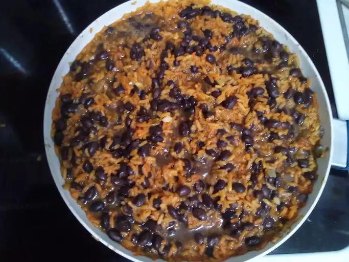
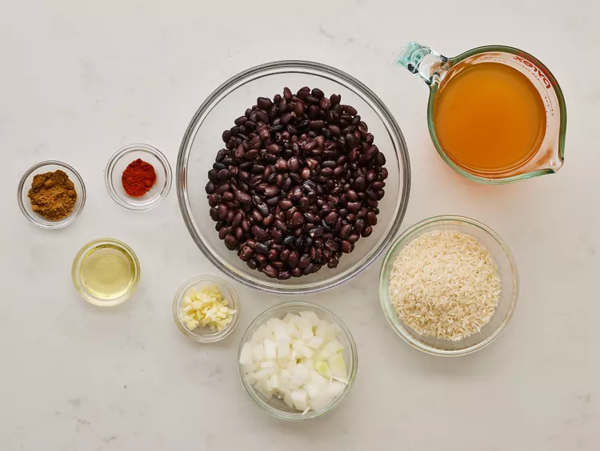
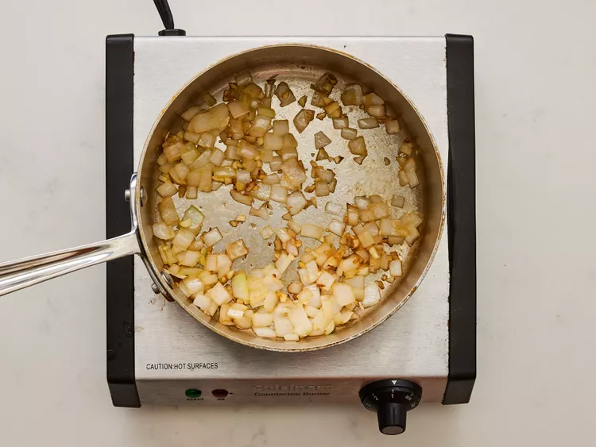
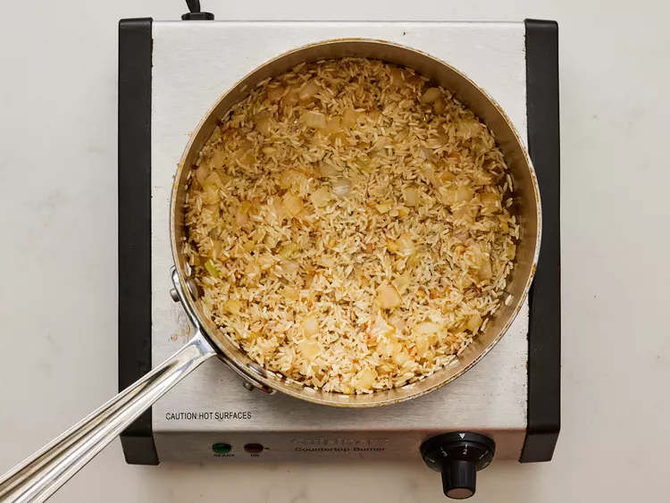
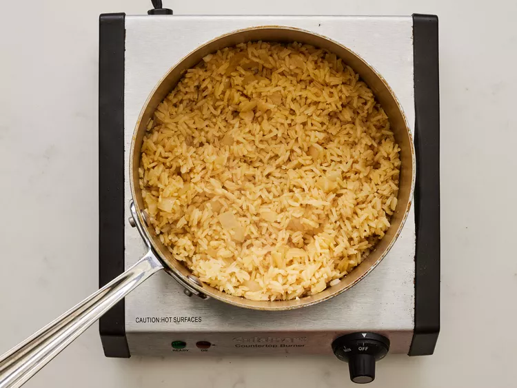
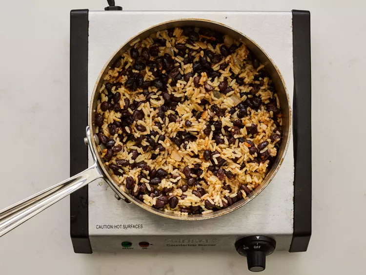
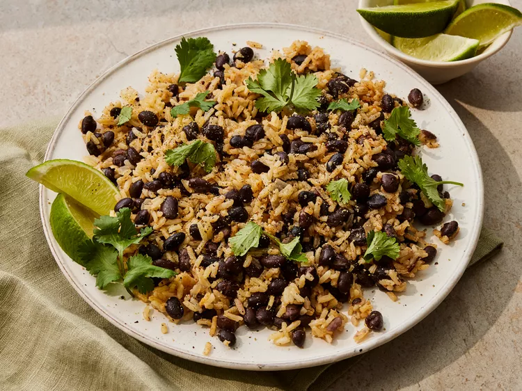

Black beans and rice make a great 30-minute vegetarian meal that's filling, delicious, and cheap! Great as a side dish or in a burrito bowl, too.
Gather all ingredients.

Heat oil in a saucepan over medium-high heat. Add onion; cook and stir until onion has softened, about 3 minutes.

Add rice, garlic, salt, cumin, and cayenne. Cook and stir for 2 to 3 minutes to lightly toast the rice and warm the spices until fragrant.

Add vegetable broth and bring to a boil. Reduce heat to low, cover, and simmer until liquid is absorbed and rice is tender, about 20 minutes.

Stir in black beans and cook until warmed through, 2 to 3 minutes.

Serve and enjoy!
